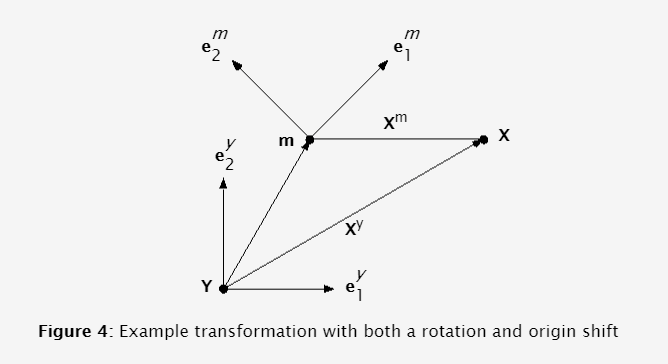

- Cy
m ym, so we also have:
xm = Cm
y (xy + m y)

Let's walk through an example. In Figure 4, the point xy is at (3,2), the m coordinate frame axes are rotated 45° from the y
coordinate frame axes, and my is (1,2). Given this information, we can
solve for xm.
Now, let's see if we can go backwards and recover the original vector as well.
This demonstrates the capability to move from any coordinate frame to another coordinate frame and back again without loss of information.
← Previous
Next →